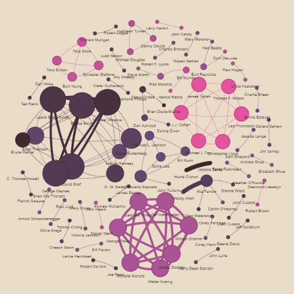
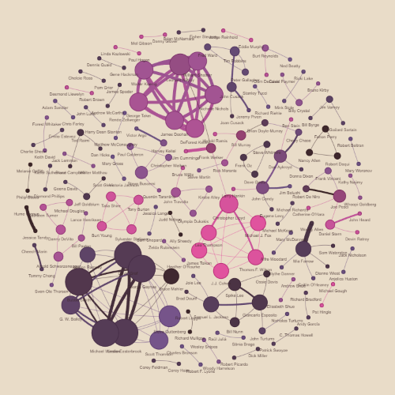
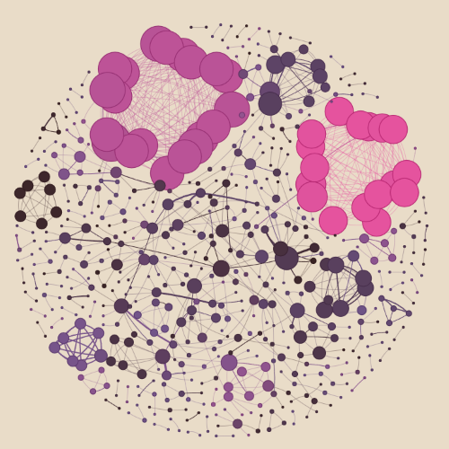
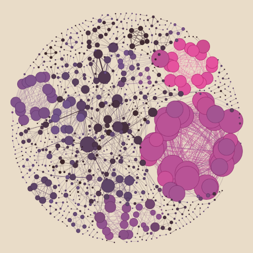

Harmony on screen: Unraveling successful collaborations in the american movie industry
The movie industry, often considered the pinnacle of modern storytelling, is a captivating realm where creativity meets technology, talent, and cultural expression. Across decades, this ever-evolving landscape has become a crucial element in global entertainment, captivating audiences worldwide and transcending geographical boundaries. Beyond the captivating narratives on the silver screen, the movie industry weaves a complex tapestry that extends its influence far beyond the confines of theaters.
At its core, the movie industry is a multifaceted ecosystem, comprising filmmakers, actors, writers, directors, producers, and numerous other creative minds. Each individual contributes unique talents to craft compelling stories. The collaborative nature of filmmaking fosters a delicate dance of ideas and visions, resulting in the creation of cinematic masterpieces that resonate with audiences on emotional, intellectual, and even spiritual levels. The relationships formed within the movie industry are as diverse as the stories it tells. Collaboration and synergy are at the heart of its success, with artists and technicians working in harmony to bring visions to life.
In this exploration of the movie industry, where success is the elusive golden ticket, we’re diving headfirst into the dynamics between actors, composers and directors. Brace yourself for a web network that connects the dots between actors, composers and directors, courtesy of the CMU Movie Summary Corpus data. Get ready to unravel the intrigue, and discover how these Hollywood connections play a role in the make-it-or-break-it game of movie success. It’s time to turn the spotlight behind the scenes, where imagination meets reality, and the movie industry takes center stage. Let the show begin! 🎬💫
I don’t like people, sorry
If you want to reduce the number of actors in your movie, unfortunately, that depends on your scenario. You can even have one actor playing all the roles ! However, in order to ensure its success, let’s see which specific individual you should cast.
table:Average movie revenue of their best 5 movies (10 best actors)
| Jim MacDonald |
2,795,528,720 |
| Harold Gould |
2,262,777,896 |
| George Furth |
2,211,523,873 |
| Kenny Baker |
2,131,260,830 |
| Anthony Daniels |
2,131,260,830 |
| James Earl Jones |
2,029,057,840 |
| Hattie McDaniel |
1,996,905,068 |
| Harrison Ford |
1,971,615,654 |
| Bill Macy |
1,925,731,205 |
| George Reeves |
1,882,126,750 |
table:Average movie rating of their best 5 movies (10 best actors)
| Abe Vigoda |
9.20 |
| Frances Conroy |
9.20 |
| James Caan |
9.20 |
| Robert Duvall |
9.10 |
| Diane Keaton |
9.10 |
| Henry Fonda |
9.00 |
| Ben Kingsley |
9.00 |
| John Rhys-Davies |
9.00 |
| Liam Neeson |
9.00 |
| Elijah Wood |
9.00 |
As you can see, there is no common ground between the two leaderboards. To bring some clarity, let’s introduce a few metrics:
- Rank percentile : Movies undergo a rating-based ranking, and to distinguish them within the same rating category, the movie boasting the highest revenue is deemed more successful, securing a superior rank. The rankings are subsequently normalized to obtain a rank percentile ranging between 0 and 1.
- Actor score : the average of the rank percentile of the actor top 5 movies. To be a successful actor, one needs to be in the best 40% (and thus their actor score is 0.6 or above).
Here is the list of the most successful actors :
| John Rhys-Davies |
0.997549 |
| Andy Serkis |
0.996397 |
| Michael Caine |
0.992806 |
| Tom Hanks |
0.992635 |
| Christian Bale |
0.992003 |
| Morgan Freeman |
0.991843 |
| Robert De Niro |
0.990278 |
| Al Pacino |
0.989189 |
| Robert Duvall |
0.989137 |
| Samuel L. Jackson |
0.988728 |
| Elijah Wood |
0.987437 |
| Harry Dean Stanton |
0.987391 |
| Charlie Chaplin |
0.986355 |
| Leonardo DiCaprio |
0.98557 |
| James Stewart |
0.983631 |
| Orlando Bloom |
0.983156 |
| Joe Pesci |
0.983145 |
| Gary Oldman |
0.982974 |
| Alfred Hitchcock |
0.98147 |
| R. Lee Ermey |
0.981269 |
But should you really get those actors in particular to make your movie a great movie ? Do those actors really make a movie more successful?
Oh, the plot thickens! It appears on the plot above that when successful actors step into the scene, they sprinkle a dash of success on the movies they touch, so you should definitely get succesful actors for your film ! But filmmaking is about collaboration, so what if they collaborate ?
Tell me Johnny, who do you see often ?
These actors practically have each other on speed dial with their frequent collaborations. However, as we can observe in the plot below, the average Joe couldn’t care less about their on-screen rendezvous.
To confirm this data, using a linear regrassion model, R2 is equal to a measly 0.001, and thus the frequency of actor co-starring doesn’t impact their movie ratings.
When playing solo isn’t the answer
Collaborative network building blocks : Time traveling in the movie industry
Only collaborations occurring at least three times will be featured in the analysis. This criterion is based on the rationale that in the movie industry, a partnership isn’t typically recognized as a significant “duo” if they have only collaborated once or twice. The focus is on observing the development of these collaborations over time and how they form clusters, reflecting either successful or less favorable outcomes. Initially, our network will encompass films released from 1980 to 1995. Subsequently, we will extend the timeline up to 2010, and finally, we will consider a broad range from 1980 to 2023, resulting in a more intricate network.
The collaborations are assessed using two primary ranking criteria. The first method ranks duos based on the average rating of their joint projects. In cases where ratings are identical, the average revenue is used as a secondary factor to differentiate the ranks. Duos with the same values in both criteria will receive the same rank. The second method prioritizes ranking based on revenue, followed by average ratings. The duo’s position in these rankings will be indicative of their performance level and will influence their representation in the network graph.
This is the legend of the graph :
- Nodes: These symbolize the actors. The size of a node correlates with the number of unique collaborations an actor has engaged in.
- Edges: These signify collaborations between pairs of actors. The thickness of an edge reflects the frequency of collaborations between the actors involved.
- Color Scheme: This aspect denotes the success level of collaborations. Collaborations are then organized based on two criteria: rating and film revenue. The ranking determines the color of the edge, with higher ranks resulting in pinker edges and lower ranks leading to browner edges. For an actor (node), their color is a mix of the shades from all the edges (collaborations) they have participated in – it’s like their personal rainbow of success.
For the network based on movie ratings:
In this network, it’s evident that clusters of actors form rapidly. Actors who begin working together often continue to collaborate, leading to increasingly prominent connections within these groups. This phenomenon is clearly visible with the expansion of edges within clusters. Notably, smaller clusters, comprising fewer than four actors, generally exhibit lower performance. This could be attributed to successful actors gravitating towards larger, more established groups.
This network also shows that prominent actors within major clusters frequently collaborate with newcomers. These clusters often display similar colors, indicating a consistent level of success, likely because they originate from actors frequently cast in the same series or films. The newcomers, after their first movie, generally stay in the same cluster and thus in the same level of success. Talk about a clique!
For the network based on revenue ratings:
-
-
-
-
-
-
-
-
-
1980-1985
Colors indicate the success of the collaboration based on movie revenue

1980-1990
Colors indicate the success of the collaboration based on movie revenue

1980-1995
Colors indicate the success of the collaboration based on movie revenue
1980-2000
Colors indicate the success of the collaboration based on movie revenue

1980-2005
Colors indicate the success of the collaboration based on movie revenue

1980-2010
Colors indicate the success of the collaboration based on movie revenue
1980-2015
Colors indicate the success of the collaboration based on movie revenue
1980-2020
Colors indicate the success of the collaboration based on movie revenue
Previous Next
The cluster formations in this network are largely similar to the first, but with notable differences in the color scheme employed. Larger clusters tend to exhibit pinker hues, suggesting higher profitability. Contrarily, large clusters with brown coloring are rare ; the brown coloring is mostly found among smaller groups with fewer actors. This pattern suggests a correlation between the length and success of an actor’s career and their network’s size: a broader network implies more varied collaborations, potentially leading to roles in higher-revenue films.
It’s gossip time : Why do actors go well together?
Our quest to unveil the secrets of successful actor clusters involved a battery of t-tests. We dissected everything from gender dynamics to how often these stars collaborated on set. Notably, the only attribute that yielded a statistically significant result (with a p-value below 0.05) was the age difference between pairs of actors.
The accompanying plot organizes clusters based on their average ranks, with the more successful clusters (denoted by lower average ranks) positioned on the left, and the less successful ones (indicated by higher average ranks) on the right. Remember, lower ranks mean higher success ! And it appears that the groups with lower average ranks have a broader age range among them. In simpler terms, those seasoned actors bring more value to the group, possibly leveraging their wealth of experience and knowledge. Age before beauty, anyone?
Spice it up with even more collaboration
Now that we’ve investigated the collaboration between actors, let’s extend the scope of our story and add the collaborative networks of composers. As you can see in the plot below, adding directors and composers do not lead to a significant change in the collaborative network. Some well-known directors pull double duty as actors, so they’re already part of the network.
As for composers, they’re practically tied at the hip with one or a select few directors. In fact, in the plot there are a lot of two-node squads, starring a director and a composer, as directors tend to keep the same composer for their movies. When clustering the nodes only on directors and composers, it is almost always a director that makes the bridge between clusters.
It’s a bit more twisted than your average plot twist
In our primary analysis, we systematically calculated the ratios of movie genres within each cluster, based on the films in which actors within the cluster participated. This method generated a comprehensive genre profile for each cluster. In contrast, our secondary analysis took a different approach, focusing on the main genres associated with the individual actors. This method offered a personalized genre representation for each cluster. Upon initial scrutiny of both datasets, a direct correlation between specific genres and the ranks of the clusters was not immediately evident.
The analysis took an intriguing turn as we subjected each genre to t-tests across the clusters. Plot twist for the crime-fiction genre : when scrutinized in the context of the actors’ main genres, crime-fiction exhibited a p-value below 0.05, indicating a statistically significant association. Delving into this discovery, especially focusing on the crime-fiction genre, unveiled a distinct pattern: a higher prevalence of this genre correlated with lower cluster rankings, suggesting a potential inverse relationship.
Expanding this statistical investigation to the movie genre ratios revealed another setback for crime-fiction, once again yielding a p-value under 0.05. The consistency in results emphasizes the genre’s impact on cluster rankings. However, the study brought forth a fascinating contrast with genres like “fantasy” and “fantasy adventure,” where the p-values were less than 0.05. Unlike crime fiction, these genres seemed to sprinkle a bit of magic dust, giving clusters a boost in rankings.
The significant correlation between the prevalence of crime-fiction and lower cluster rankings suggests that clusters heavily inclined towards this genre might encounter specific challenges. This could be attributed to the demanding nature of crime-fiction narratives, needing performances so intense they could rival a Shakespearean tragedy – not everyone’s cup of cinematic tea. Focusing too much on this genre could restrict the versatility and appeal of the cluster’s collective filmography.
Conversely, the positive correlation observed with fantasy and fantasy adventure genres suggests a different dynamic.Think imaginative storytelling and visual spectacle – a recipe for a diverse and engaging portfolio. It’s like adding different spices to your cooking; suddenly, you’ve got a feast that everyone wants a bite of. More diverse, more appealing, potentially leading to those high cluster rankings.
These patterns aren’t just about the actors preferences; they’re a strategic play shaping the cluster’s success. The study indicates that a balanced and diverse genre portfolio within a cluster may be more conducive to achieving higher rankings, possibly due to broader audience appeal and increased opportunities for showcasing a range of acting skills and storylines. This insight holds value for actors and industry professionals in forming collaborative groups and selecting projects, diversifying genres isn’t merely a passing trend; it’s the secret sauce for crafting successful career trajectories.
Divining the future : ask the crystal ball
Our exploration to predict the movie rating considered the following features defined in the context of pairs of actors that have played together in a movie: - Age difference - The difference in the number of movies they have played in - The number of movies they have played together in - The main genre of movies played by the actors
To unravel the cinematic enigma, we computed a rank percentile born from normalized movie ratings and revenues and accounting for inflation’s dramatic influence. Here, a rank percentile edging towards 1 signals a successful actor duo. We have considered a successful movie to be successful if its ranking was in the 40% more successful movies, which, in our script, equates to a rank percentile of 0.6 or higher. Using the cast of features above, we trained a logistic regression model on the training set (80% of the data) and evaluated it on the test set. Our crystal ball is ready and the stage is set for success! 🌟🎥
Ending credits
In summary, this work explores the intricate dynamics of successful collaborations in the American movie industry. From the interconnected web of actors, composers and directors to the influence of genres and the significance of age difference, the analysis unveils the multifaceted nature of success in this creative ecosystem. The study’s findings underscore the importance of collaboration, genre diversity, and experienced actors in shaping the success of cinematic endeavors. As the curtain falls, the movie industry continues to weave its captivating narrative, driven by the harmonious interplay of talent, creativity, and strategic collaborations.